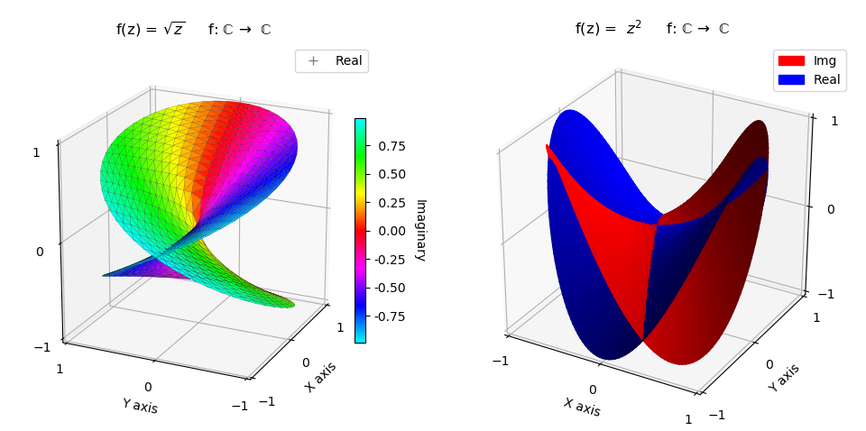
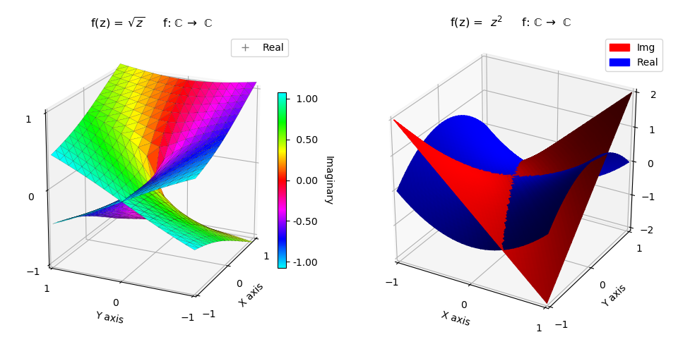
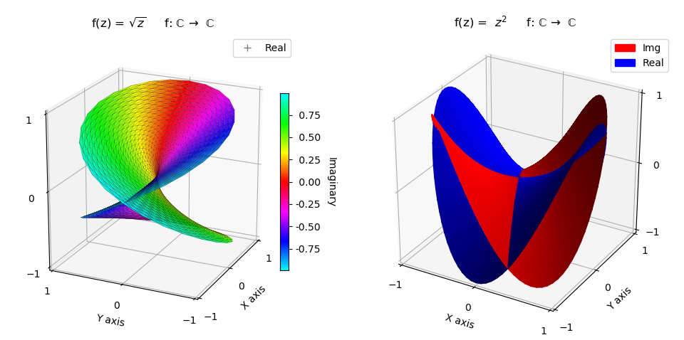
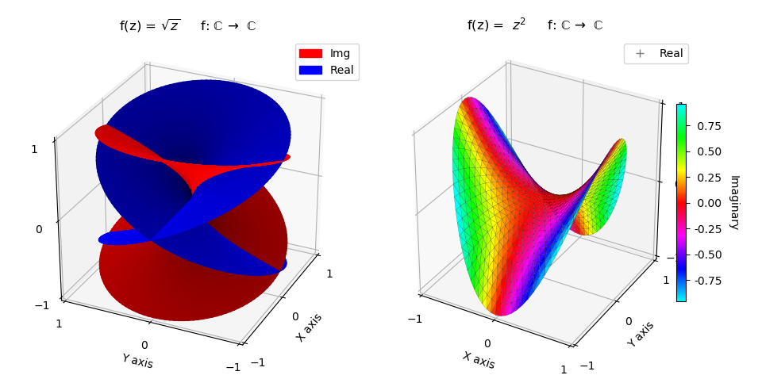

Complex Number Representation, Geometry and Colormap¶
Polar Coordinates¶
In this example, both functions are expressed in the native polar coordinates, z = f(r,θ). For the square root function, the real component is geometrically visualized whereas the imaginary component is expressed as color. The square function in the right plot expresses both real and imaginary components geometrically with two surfaces combined as one. Each function uses the isReal argument to indicate whether the real or imaginary component is returned.
In polar coordinates, the domain for the angular coordinate is 0 ≤ θ ≤ 2π. The domain for the square root function is 0 ≤ θ ≤ 4π, hence the need for the highlighted statement in the following code.
import numpy as np
import matplotlib.pyplot as plt
import matplotlib.patches as mpatches
import matplotlib.lines as mlines
from matplotlib.ticker import LinearLocator, FormatStrFormatter
import s3dlib.surface as s3d
import s3dlib.cmap_utilities as cmu
#.. Complex Number Representation, Geometry and Colormap: Polar Coordinates
# 1. Define functions to examine ....................................
real = True
imaginary = not real
def sqrt_Z(rtz, isReal) :
r,t,z = rtz
T=2*t
if isReal : Z = np.sqrt(r)*np.cos(T/2)
else : Z = np.sqrt(r)*np.sin(T/2)
return r,T,Z
def square_Z(rtz, isReal) :
r,t,z = rtz
if isReal : Z = r*r*np.cos(2*t)
else : Z = r*r*np.sin(2*t)
return r,t,Z
# 2. Setup and map surfaces .........................................
zMap = cmu.hsv_cmap_gradient( [.5,1,1], [1.5,1,1] )
surface_1 = s3d.PolarSurface(4, cmap=zMap,linewidth=0.1)
surface_1.map_cmap_from_op( lambda rtz : sqrt_Z(rtz,imaginary)[2] )
surface_1.map_geom_from_op( lambda rtz : sqrt_Z(rtz,real) )
surface_1.set_edgecolor([0,0,0])
surface_I = s3d.PolarSurface(5, facecolor='red')
surface_I.map_geom_from_op( lambda rtz : square_Z(rtz,imaginary) )
surface_R = s3d.PolarSurface(5, facecolor='blue')
surface_R.map_geom_from_op( lambda rtz : square_Z(rtz,real) )
surface_2 = surface_I + surface_R
surface_2.shade(direction=[1,1,1])
# 3. Construct figure, add surfaces, and plot .....................
fcc = r' f: $\mathrm{\mathbb{C}}$ $\to$ $\mathrm{\mathbb{C}}$' +'\n\n'
minmax, ticks = (-1,1) , [-1,0,1]
fig = plt.figure(figsize=plt.figaspect(0.6/1.2))
ax1 = fig.add_subplot(121, projection='3d')
ax1.view_init(20, 205)
ax1.set(xlim=minmax, ylim=minmax, zlim=minmax)
ax1.set_xticks(ticks)
ax1.set_yticks(ticks)
ax1.set_zticks(ticks)
ax1.set_xlabel('X axis')
ax1.set_ylabel('Y axis')
ax1.set_title( r'f(z) = $\sqrt{z}$' + fcc )
cbar = plt.colorbar(surface_1.cBar_ScalarMappable, ax=ax1, shrink=0.6, pad=-.05 )
cbar.set_label('Imaginary', rotation=270, labelpad = 15)
cbar.ax.yaxis.set_major_formatter(FormatStrFormatter('%5.2f'))
real_handle = mlines.Line2D([], [], color='grey', marker='+', linestyle='None',
markersize=7, label='Real')
ax1.legend(handles=[real_handle])
ax2 = fig.add_subplot(122, projection='3d')
ax2.set(xlim=minmax, ylim=minmax, zlim=minmax)
ax2.set_xticks(ticks)
ax2.set_yticks(ticks)
ax2.set_zticks(ticks)
ax2.set_xlabel('X axis')
ax2.set_ylabel('Y axis')
ax2.set_title( r'f(z) = $z^2$' + fcc )
red_patch = mpatches.Patch(color='red', label='Img')
blue_patch = mpatches.Patch(color='blue', label='Real')
ax2.legend(handles=[red_patch,blue_patch])
ax1.add_collection3d(surface_1)
ax2.add_collection3d(surface_2)
fig.tight_layout()
plt.show()
Planar Coordinates¶
In this example, both functions are expressed in the planar coordinates, z = f(x,y). As a result, the function definitions for this case are in x,y coordinates.
From de Moivre’s formula, there is a positive and negative solution for the square root. Each solution requires a separate surface and therefore two surfaces, positive and negative, were combined for the square root function. The isPos argument sets whether the positive or negative surface coordinates are returned from the function.
# 1. Define functions to examine ....................................
real = True
imaginary = not real
def sqrt_Z(xyz, isReal, isPos=True) :
x,y,z = xyz
r = np.sqrt( x*x + y*y )
t = np.arctan2(y,x)
if isReal : Z = np.sqrt(r)*np.cos(t/2)
else : Z = np.sqrt(r)*np.sin(t/2)
if not isPos : Z = -Z
return x,y,Z
def square_Z(xyz, isReal) :
x,y,z = xyz
if isReal : Z = x*x - y*y
else : Z = 2*x*y
return x,y,Z
# 2. Setup and map surfaces .........................................
zMap = cmu.hsv_cmap_gradient( [.5,1,1], [1.5,1,1] )
surface_1pos = s3d.PlanarSurface(3, basetype='oct1', cmap=zMap,linewidth=0.1)
surface_1pos.map_cmap_from_op( lambda xyz : sqrt_Z(xyz,imaginary)[2] )
surface_1pos.map_geom_from_op( lambda xyz : sqrt_Z(xyz,real) )
surface_1neg = s3d.PlanarSurface(3, basetype='oct1', cmap=zMap,linewidth=0.1)
surface_1neg.map_cmap_from_op( lambda xyz : sqrt_Z(xyz,imaginary,False)[2] )
surface_1neg.map_geom_from_op( lambda xyz : sqrt_Z(xyz,real,False) )
surface_1 = surface_1pos + surface_1neg
surface_1.set_linewidth(0.1)
surface_1.set_edgecolor([0,0,0])
surface_I = s3d.PlanarSurface(5, facecolor='red')
surface_I.map_geom_from_op( lambda xyz : square_Z(xyz,imaginary) )
surface_R = s3d.PlanarSurface(5, facecolor='blue')
surface_R.map_geom_from_op( lambda xyz : square_Z(xyz,real) )
surface_2 = surface_I + surface_R
surface_2.shade(direction=[1,1,1])
Polar returning Planar¶
For functions in one coordinate system, but return coordinates in planar coordinates, the geometric mapping can return xyz coordinates using the returnxyz argument instead of native coordinates. When this is the case, the function must evaluate all x, y, and z coordinates. For this example
Although not needed in the current example, this can easily be done by slightly modifying the functional operations, as shown in the highlighted code below. The Polar Coordinates to XYZ for the Dini surface is a good example where returning x,y,z coordinates is applicable.
Using the following code, the resulting plots will be identical to those shown in the first example.
# 1. Define functions to examine ....................................
real = True
imaginary = not real
def sqrt_Z(rtz, isReal) :
r,t,z = rtz
T=2*t
if isReal : Z = np.sqrt(r)*np.cos(T/2)
else : Z = np.sqrt(r)*np.sin(T/2)
x = r*np.cos(T)
y = r*np.sin(T)
return x,y,Z
def square_Z(rtz, isReal) :
r,t,z = rtz
if isReal : Z = r*r*np.cos(2*t)
else : Z = r*r*np.sin(2*t)
x = r*np.cos(t)
y = r*np.sin(t)
return x,y,Z
# 2. Setup and map surfaces .........................................
zMap = cmu.hsv_cmap_gradient( [.5,1,1], [1.5,1,1] )
surface_1 = s3d.PolarSurface(4, cmap=zMap,linewidth=0.1)
surface_1.map_cmap_from_op( lambda rtz : sqrt_Z(rtz,imaginary)[2] )
surface_1.map_geom_from_op( lambda rtz : sqrt_Z(rtz,real), returnxyz=True )
surface_1.set_edgecolor([0,0,0])
surface_I = s3d.PolarSurface(5, facecolor='red')
surface_I.map_geom_from_op( lambda rtz : square_Z(rtz,imaginary), returnxyz=True )
surface_R = s3d.PolarSurface(5, facecolor='blue')
surface_R.map_geom_from_op( lambda rtz : square_Z(rtz,real), returnxyz=True )
surface_2 = surface_I + surface_R
surface_2.shade(direction=[1,1,1])
Cylindrical Coordinates¶
In cylindrical coordinates, ( r,θ,z ) , there are two independent variables, θ and z, for the CylindricalSurface object. The predefined surface object uses a constant radial coordinate for this geometry with r = 1 and -1 ≤ Z ≤ 1. To apply the cylindrical surface to polar coordinates, use a simple linear tranformation for 0 ≤ r ≤ 1, as
where now the function for z can be expressed in terms of r and θ. The r(z) linear function has a negative slope so that the surface normals have a positve upward direction on the polar surface.
Compared to the polar coordinate plot, only a minor change was needed in the function definitions. The only noticeable difference in polar versus the cylindrical surface is the minor resolution change in the square root plot.
Note
This example is for demonstration purposes and cylindrical coordinates are not convenient to use for such a simple case. However, it does demonstrate using a base surface coordinate with a range (in this case z) as a substitute for a coordinate which is constant (in this case r). When applied in this manner, coordinate transformations are necessary.
The selection of using various base objects by considering the distribution of vertices in the native coordinates is further discussed in the Selecting a Base guide.
# 1. Define functions to examine ....................................
real = True
imaginary = not real
def sqrt_Z(rtz, isReal) :
r,t,z = rtz
r = (1-z)/2
T=2*t
if isReal : Z = np.sqrt(r)*np.cos(T/2)
else : Z = np.sqrt(r)*np.sin(T/2)
return r,T,Z
def square_Z(rtz, isReal) :
r,t,z = rtz
r = (1-z)/2
if isReal : Z = r*r*np.cos(2*t)
else : Z = r*r*np.sin(2*t)
return r,t,Z
# 2. Setup and map surfaces .........................................
zMap = cmu.hsv_cmap_gradient( [.5,1,1], [1.5,1,1] )
surface_1 = s3d.CylindricalSurface(4, cmap=zMap,linewidth=0.1)
surface_1.map_cmap_from_op( lambda rtz : sqrt_Z(rtz,imaginary)[2] )
surface_1.map_geom_from_op( lambda rtz : sqrt_Z(rtz,real) )
surface_1.set_edgecolor([0,0,0])
surface_I = s3d.CylindricalSurface(5, facecolor='red')
surface_I.map_geom_from_op( lambda rtz : square_Z(rtz,imaginary) )
surface_R = s3d.CylindricalSurface(5, facecolor='blue')
surface_R.map_geom_from_op( lambda rtz : square_Z(rtz,real) )
surface_2 = surface_I + surface_R
surface_2.shade(direction=[1,1,1])
Alternative Representations¶
The two complex functions in this example have used two different representations. That being combining real and imaginary components into one color mapped surface, or representing the two components as two surfaces. These representation may be used for either function, as shown below by switching the representations.
# 2. Setup and map surfaces .........................................
zMap = cmu.hsv_cmap_gradient( [.5,1,1], [1.5,1,1] )
surface1_I = s3d.PolarSurface(6, basetype='squ', facecolor='red')
surface1_I.map_geom_from_op( lambda rtz : sqrt_Z(rtz,imaginary) )
surface1_R = s3d.PolarSurface(6, basetype='squ', facecolor='blue')
surface1_R.map_geom_from_op( lambda rtz : sqrt_Z(rtz,real) )
surface_1 = (surface1_I + surface1_R).shade(direction=[1,1,1])
surface_2 = s3d.PolarSurface(4, cmap=zMap,linewidth=0.1)
surface_2.map_cmap_from_op( lambda rtz : square_Z(rtz,imaginary)[2] )
surface_2.map_geom_from_op( lambda rtz : square_Z(rtz,real) )
surface_2.set_edgecolor([0,0,0])